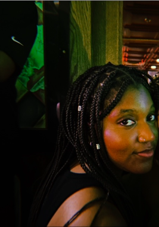

Entertainment and Culture Reporter
As an intern at NIH’s Office of Communications and Public Liason, I conducted interviews, researched and wrote health news capsules and stories for NIH News in Health. I wrote NIH community news stories for NIH Record. I also compiled relevant NIH health resources, then wrote teasers and suggested image hints for the NIH Health Information Portal (HIP). Broadly, I reviewed content and AP style edits with editors and collaborated with colleagues to prep every issue of newsletters and HIP for publication.
I pitch music and other entertainment-related articles and conduct deep research on and write articles on a deadline once the story ideas are approved. Additionally, I review content and AP style edits with a copy editor before publishing.
I make content, grammar and AP style edits to other writers’ articles. I also collaborate with other copy editors to prep articles for final publication.
I pitch pop culture and entertainment news-related stories, conduct deep research on and write stories on a deadline once approved. I also review content and AP style edits and read written stories on-air with a few other anchors, where we also share our thoughts and opinions.
I worked with a group of 10 other Media scholars and professionals to exhibit presentations about media literacy to students elementary school-aged and older in schools and public libraries in and around the College Park area. With my group, I also facilitated paths for students to absorb information through methods like quizzes, prize wheels, etc. In the previous semester, I worked with a five-person group of students to research and create a presentation about diversity in the media.
I aided psychologists at a week-long summer camp for elementary school-aged children on the autism spectrum or with attention deficit hyperactivity disorder. I worked with students to focus on lessons being taught by the psychologists and encouraged them to interact with other children during recess.